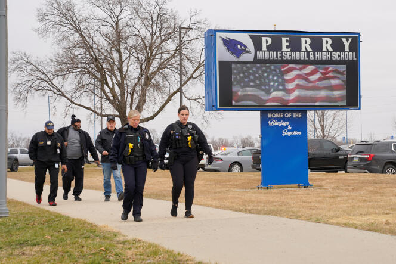

Perry, Iowa School Shooting
Last Updated: Jan 11, 2024, 8:09pm

Taken from Le Monde
Location of Shooting
- A Perry, IowaMiddle School
- Perry is a town of 8,000 about 40 miles northwest of Des Moines
Summary of Events
- Events took place in the morning on Thursday, January 4th
- Authorities were notified of an active shooter at 7:37 a.m. local time — before school started — and arrived on the scene within seven minutes, according to Dallas County Sheriff Adam Infante
- Principal Dan Marburger placed himself in harm's way in an apparent effort to protect his students
- Second school shooting of the year, according to a CNN analysis
- One of at least four mass shootings that have unfolded in the United States in 2024, according to the Gun Violence Archive
Outcome - As of Now
- One victim: 11 year-old Ahmir Jolliff
- The shooter, 17 year-old Dylan Butler, died from a self-inflicted gunshot wound
- Seven other individuals received wounds or injuries of varying degree during the shooting event:
- The school's principal and two other students who remain hospitalized
- Four students who were released from the hospital.
Investigations
- Background investigations, as well as eyewitness accounts and victim interviews, are continuing.
- Once the investigation is complete, the DCI’s investigative report will be turned over to the Dallas County Attorney’s Office to determine what additional course of action, if any, should be undertaken.
- No further information will be released at this time.
Sources: Iowa Department of Public Safety (DPS), CNN, and the Gun Violence Archive